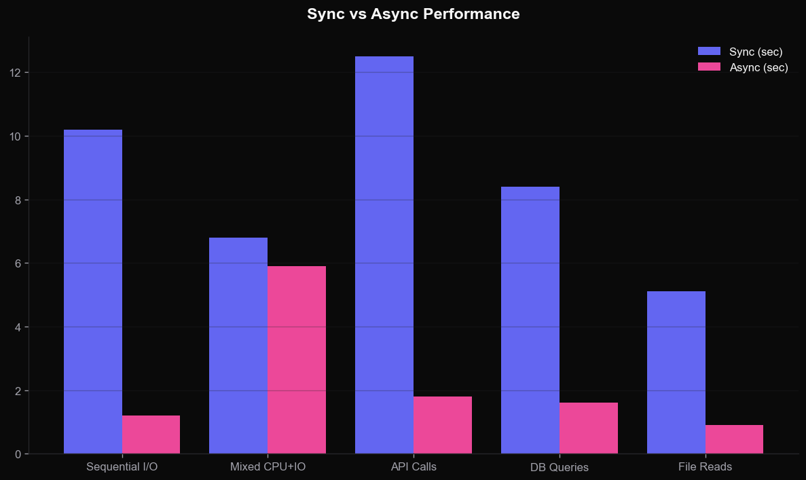
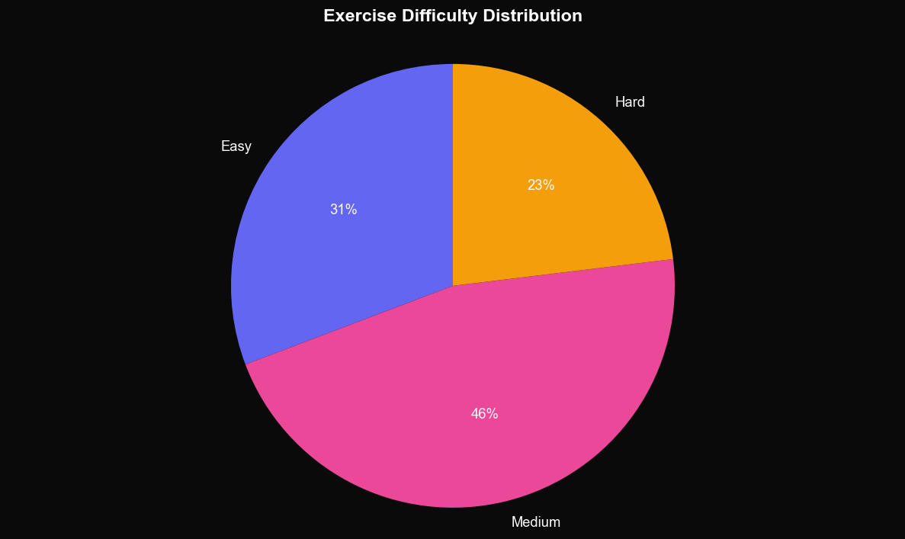

写出更 Pythonic 的代码
装饰器 · 异步编程 · 元类 · 描述符 — 四大高级特性深度解析
四个模块,一次掌握
01 · 装饰器
函数包装、参数化、链式
02 · 异步编程
asyncio、协程、事件循环
03 · 元类
type、__new__、ORM 实战
04 · 描述符
属性协议、惰性求值
装饰器是高阶函数的语法糖
在不修改原函数的前提下,扩展其行为
@log_calls:记录函数调用日志
装饰器接收函数作为参数,返回一个新函数。
下面的 @log_calls 会在调用前后输出结构化日志,包含函数名、参数、返回值与耗时,便于排查线上问题。
- · functools.wraps 保留元数据
- · *args, **kwargs 透传所有参数
- · 同时输出 INFO 与 ERROR 日志
- · 可叠加多个装饰器
import logging from functools import wraps logger = logging.getLogger("app") def log_calls(func): # 包装器:记录函数调用与返回 @wraps(func) def wrapper(*args, **kwargs): logger.info(f"-> {func.__name__} args={args} kw={kwargs}") try: result = func(*args, **kwargs) logger.info(f"<- {func.__name__} ok") return result except Exception as e: logger.error(f"!! {func.__name__} failed: {e}") raise return wrapper @log_calls def slow_query(n): return sum(i*i for i in range(n))
线上 API 调用全链路日志
把 @log_calls 贴到所有外部依赖调用上,你立刻获得:
- · 每次请求的入参 / 返回 / 异常
- · 失败的精确堆栈,无需 try/except 散落在业务代码
- · 配合 ELK / Loki 一行命令检索任意函数调用
- · 可与 trace_id 结合做分布式追踪
import requests @log_calls def charge_card(user_id, amount): # 调用支付网关 r = requests.post( "https://api.stripe.com/v1/charges", json={"user": user_id, "amount": amount}, timeout=5, ) r.raise_for_status() return r.json() @log_calls def send_receipt(user_id, charge_id): # 发送收据邮件 return mailer.send(user_id, charge_id) # 一次完整调用会输出 4 条日志: # -> charge_card / <- charge_card # -> send_receipt / <- send_receipt
三层嵌套:参数化装饰器
当装饰器需要配置项时,需要再包一层函数,形成 装饰器工厂。
- 外层:接收装饰器参数
- 中层:接收被装饰函数
- 内层:替换原函数的逻辑
def retry(times=3, delay=1): def decorator(func): @wraps(func) def wrapper(*args, **kw): for i in range(times): try: return func(*args, **kw) except Exception as e: time.sleep(delay) raise return wrapper return decorator @retry(times=5, delay=2) def fetch(url): ...
用装饰器实现单例模式
装饰器不仅能装饰函数,也能装饰类。下面的 @singleton 保证一个类只有一个实例。
- · 配置管理器 / 日志器 / 数据库连接
- · 比 Borg 模式更直观
def singleton(cls): instances = {} def get_instance(*args, **kw): if cls not in instances: instances[cls] = cls(*args, **kw) return instances[cls] return get_instance @singleton class Config: def __init__(self): self.db = "postgres://..." a = Config() b = Config() assert a is b # True
异步:用单线程跑出多线程的吞吐量
事件循环 + 协程 + 非阻塞 I/O
协程 = 可暂停的函数
async def 定义协程,await 让出控制权。
关键概念:
- · Event Loop:事件循环调度器
- · Task:协程的调度单元
- · gather:并发等待多个 Task
import asyncio import aiohttp async def fetch(session, url): async with session.get(url) as r: return await r.text() async def main(): urls = ["https://api.x/1", "https://api.x/2"] async with aiohttp.ClientSession() as s: results = await asyncio.gather( *[fetch(s, u) for u in urls] ) return results asyncio.run(main())
同样的逻辑,两种写法
读取 5 个 URL 的内容。同步版本必须排队等待,异步版本利用 I/O 等待时间并发跑满。
- · 同步:总耗时 ≈ 各请求耗时之和
- · 异步:总耗时 ≈ 最慢的那一个
- · 代码量几乎相同,性能差距 5-10 倍
# --- 同步版本 --- import requests def fetch_all_sync(urls): return [requests.get(u).text for u in urls] # --- 异步版本 --- import asyncio, aiohttp async def fetch_all_async(urls): async with aiohttp.ClientSession() as s: return await asyncio.gather( *[s.get(u) for u in urls] )
用信号量限制并发数
真实场景下,后端不能承受 1000 个并发请求。用 asyncio.Semaphore 控制最大并发,既快又稳。
- · 爬虫限流
- · 数据库连接池
- · API 速率限制
sem = asyncio.Semaphore(10) async def guarded_fetch(url): async with sem: return await fetch(url) async def main(): tasks = [ guarded_fetch(u) for u in all_urls # 1000 个 URL ] return await asyncio.gather(*tasks)
异步在 I/O 密集任务上提速 5-10 倍

元类:创造类的类
"如果你不知道是否需要元类,你就不需要它"— Tim Peters
type 既是函数也是元类
所有类的默认元类是 type。重写 __new__ 可以拦截类的创建过程。
- · 自动注册子类
- · 强制接口规范
- · ORM 字段映射
class UpperAttrMeta(type): def __new__(mcs, name, bases, attrs): upper_attrs = { (k.upper() if not k.startswith("__") else k): v for k, v in attrs.items() } return super().__new__(mcs, name, bases, upper_attrs) class Foo(metaclass=UpperAttrMeta): bar = "hello" print(Foo.BAR) # "hello"
Django/SQLAlchemy 都靠元类
声明 Field 类属性,元类自动收集成 _fields 字典,生成 SQL 模板。
优势:声明式 API,使用者完全无感。
class ModelMeta(type): def __new__(mcs, name, bases, attrs): fields = {k: v for k, v in attrs.items() if isinstance(v, Field)} attrs["_fields"] = fields attrs["_table"] = name.lower() return super().__new__(mcs, name, bases, attrs) class User(metaclass=ModelMeta): id = IntField() name = StrField(max_length=100) print(User._fields) # {'id':..,'name':..}
描述符:属性访问的协议
@property、classmethod、staticmethod 都是描述符
三个魔法方法定义协议

用描述符做字段校验
定义一个 Typed 描述符,赋值时自动检查类型,赋错值立刻报错。
- · dataclass 字段约束
- · 配置项验证
- · 取代大量 setter
class Typed: def __init__(self, expected): self.expected = expected def __set_name__(self, owner, name): self.name = name def __get__(self, inst, owner): return inst.__dict__[self.name] def __set__(self, inst, value): if not isinstance(value, self.expected): raise TypeError(self.name) inst.__dict__[self.name] = value class Order: qty = Typed(int) price = Typed(float)
13 道练习,覆盖四大主题
- E @wraps 的作用
- E 写一个 @timer 装饰器
- E 给函数加 @retry(times=3)
- E 用装饰器实现 @memoize
- M async 能否在普通函数调用
- M 写 @log_calls 含异常处理
- M 用 Semaphore 限制并发为 5
- M asyncio.gather vs as_completed
- M 用元类自动小写所有方法名
- M 描述符 vs property 的区别
- H 元类实现插件自动注册
- H 描述符实现 TypedField 校验
- H 写一个迷你 ORM 元类

检验一下学习成果
四个核心要点
装饰器
函数即对象,组合优于继承
异步
I/O 等待时间 = 优化空间
元类
除非必要,优先用 __init_subclass__
描述符
是 property 背后的真正魔法
Questions?
课件、代码示例、参考资料 → python-advanced/README.md